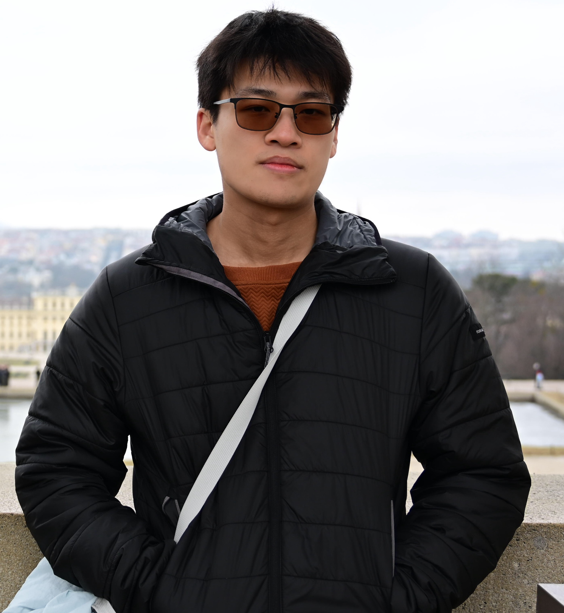

Haoyang Ma (马昊阳)
I am a research engineer at ByteDance, working on AI systems and agents. During my PhD, I worked in the areas of software engineering, programming languages, and their intersection with AI, including bug detection, bug localization, and LLM-empowered programming. I also have hands-on experience in compiler development and AI infrastructure.
See my experience and awards.
